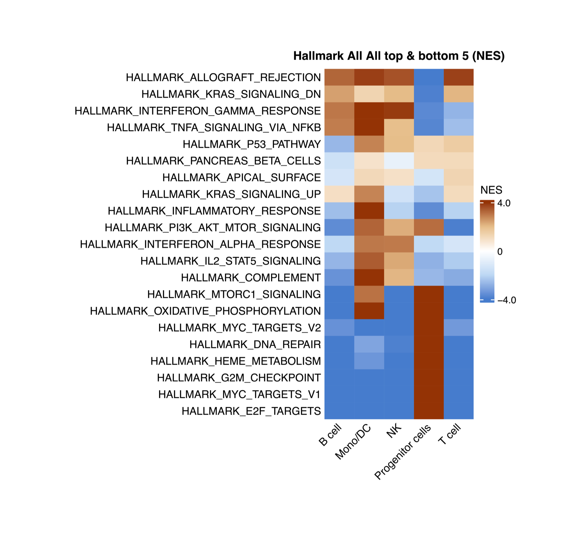
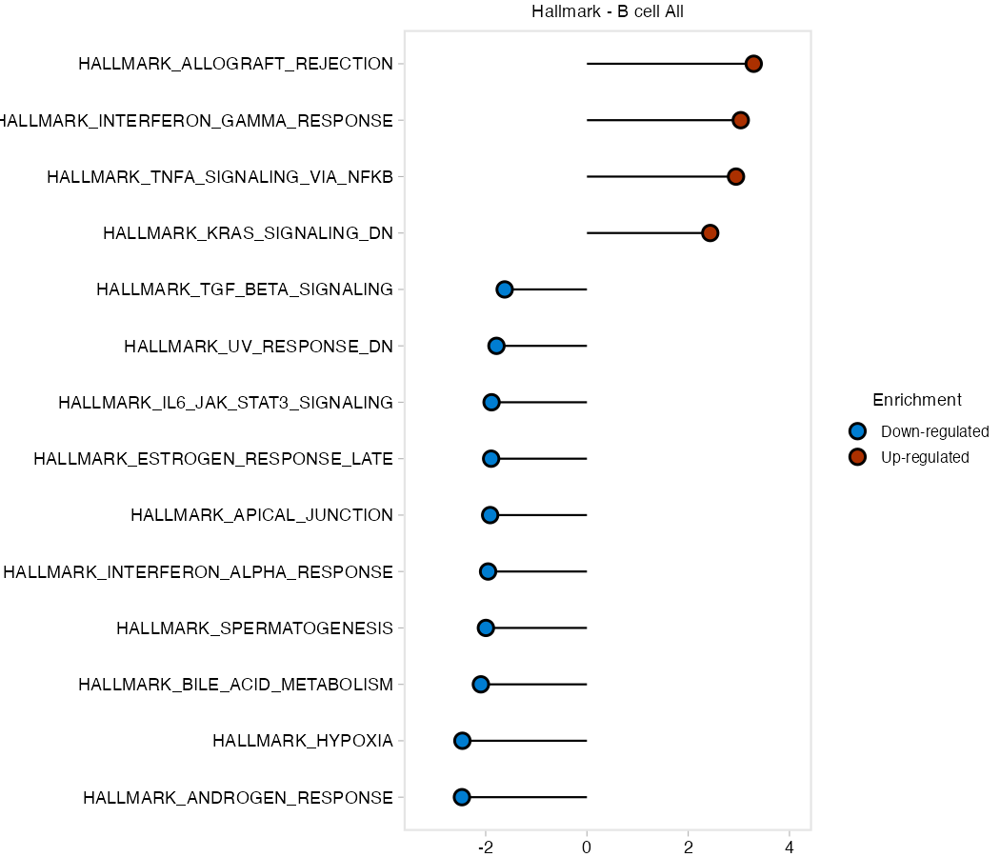

scSidekick - Pathway Analysis: RunGSEA
08_pathway_gsea.RmdOverview
RunGSEA() performs gene set enrichment analysis (GSEA)
on a Seurat object. It handles the full pipeline internally:
- Subset by
split.by(e.g. one GSEA per broad cell type) - Run Wilcoxon DE with
RunWilcoxAUC(), grouped bygroup.by - Run
fgseaagainst one or more MSigDB collections - Save lollipop plots (top/bottom pathways per group) and NES heatmaps as PDFs
No pre-computed DE table is needed - just pass the Seurat object.
For sample-level pseudobulk GSEA with limma-voom contrasts, see
Vignette 09: RunGSEA_pseudobulk.
Standard setup
library(scSidekick)
library(Seurat)
library(SeuratData)
library(dplyr)
data("bmcite")
bmcite <- UpdateSeuratObject(bmcite)
bmcite <- bmcite %>%
NormalizeData() %>% FindVariableFeatures() %>% ScaleData() %>% RunPCA()
dims <- Determine_nDims(bmcite, elbow_plot = FALSE)
bmcite <- RunUMAP(bmcite, dims = 1:dims$n_dims)
bmcite <- FindNeighbors(bmcite, dims = 1:dims$n_dims)
bmcite <- FindClusters(bmcite, resolution = 0.5)
bmcite <- PrepObject(bmcite,
variables = c("lane", "donor", "celltype.l1", "celltype.l2", "seurat_clusters"),
group.by = "celltype.l1",
split.by = "donor",
output_dir = tempdir(),
object_name = "bmcite")1. Basic call
You will get a subfolder per geneset dataset and inside you will have heatmaps comparing the NES per group and lollipop plots for each group separately,legeneds and source tables are also saved


group.by defines the groups being compared (e.g. cell
types, clusters). split.by = NULL runs a single GSEA on the
whole object. Set split.by to a broad cell-type column
(e.g. "celltype.l1") to run GSEA separately within each
major lineage.
By default RunGSEA tests four MSigDB collections:
Hallmark, KEGG, Reactome, and WikiPathways.
What gets saved alongside the plots
Every run also writes two small JSON files into its own timestamped
run folder under output_dir, so a figure is never separated
from exactly how it was made:
-
analysis_params.json- the literal function call as typed, every parameter that was actually used, and a ready-to-paste methods paragraph. -
run_fingerprint.json- the parameter fingerprintresume/resume_foldermatch against to detect a repeat run, so re-running with the same settings reuses the existing output instead of recomputing it.
analysis_params.json
json
{
"date": "2026-09-02",
"function_call": "RunGSEA(seurat_object = bmcite, group.by = \"celltype.l1\", split.by = NULL, output_dir = tempdir())",
"gsea_method": "single-cell (Wilcoxon/presto + fgsea)",
"gsea_group_by": "celltype.l1",
"gsea_assay": "RNA",
"gsea_min_cells": 20,
"gsea_databases": ["Hallmark", "KEGG", "Reactome", "WP"],
"gsea_species": "Homo sapiens",
"gsea_padj_thresh": 0.05,
"gsea_logfc_thresh": 0.1,
"gsea_top_n": 5,
"gsea_nes_cutoff": 1,
"gsea_methods_text": "Gene set enrichment analysis (GSEA) was performed using fgsea (Korotkevich et al., 2021) with Wilcoxon rank-sum AUC pre-ranking via presto (assay: 'RNA'). Differential expression was computed comparing celltype.l1 groups. Subsets with fewer than 20 cells were skipped. The following MSigDB gene-set collections were tested: Hallmark, KEGG, Reactome, WP. Gene sets with fewer than 10 members were excluded. Significance threshold: adjusted p < 0.05; minimum log-fold-change for DE pre-ranking: 0.1. Lollipop plots show the top/bottom 10 significant pathways per celltype.l1 group ranked by Normalized Enrichment Score (NES). Summary heatmaps show the union of the top & bottom 5 pathways per group, filtered to pathways with max |NES| >= 1 across all groups."
}
run_fingerprint.json
json
{"group.by":"celltype.l1","split.by":null,"label.by":null,"species":"Homo sapiens","assay":"RNA","min_cells":20,"gene_sets_names":null,"deg_df_dim":null,"deg_df_cols":null,"pathway_sets":{"Hallmark":{"category":"H"},"KEGG":{"category":"C2","subcategory":"CP:KEGG"},"Reactome":{"category":"C2","subcategory":"CP:REACTOME"},"WP":{"category":"C2","subcategory":"CP:WIKIPATHWAYS"}},"search_terms":null}
2. Split by broad cell type
The most common use: compare detailed subtypes
(celltype.l2) within each major lineage
(celltype.l1).
This produces one independent GSEA per level of
celltype.l1. For each, DE is computed between
celltype.l2 groups and pathways are ranked by NES.
3. Custom pathway collections
Supply any combination of MSigDB collections via
pathway_sets. Each element needs a category
and an optional subcategory.
res <- RunGSEA(bmcite,
group.by = "celltype.l1",
split.by = NULL,
output_dir = tempdir(),
pathway_sets = list(
Hallmark = list(category = "H"),
ImmuneSigDB = list(category = "C7", subcategory = "IMMUNESIGDB"),
GO_BP = list(category = "C5", subcategory = "GO:BP")
))Run msigdbr::msigdbr_collections() to see all available
collections.
4. Mouse datasets
res <- RunGSEA(brain,
group.by = "seurat_clusters",
split.by = NULL,
species = "Mus musculus",
output_dir = tempdir())5. Adjusting thresholds
padj_thresh and logfc_thresh filter DE
results before ranking. top_n controls how many pathways
appear per group in summary heatmaps.
res <- RunGSEA(bmcite,
group.by = "celltype.l1",
split.by = NULL,
padj_thresh = 0.01,
logfc_thresh = 0.25,
top_n = 10L,
output_dir = tempdir())6. Resuming a long run
resume = TRUE skips subsets for which output files
already exist in output_dir. Essential when restarting a
run that was interrupted.
res <- RunGSEA(bmcite,
group.by = "celltype.l2",
split.by = "celltype.l1",
output_dir = tempdir(),
resume = TRUE)7. Customizing heatmap colors
By default NES heatmaps use a 5-stop diverging palette centered at 0
(blue - light blue - white - light orange - orange-red). Override with
any circlize::colorRamp2 object via
heatmap_colors.
# Classic blue-white-red (3-stop)
col_bwr <- circlize::colorRamp2(c(-3, 0, 3), c("#2166ac", "white", "#d6604d"))
# Purple-green (PRGn)
col_prg <- circlize::colorRamp2(
c(-3, -1.5, 0, 1.5, 3),
c("#762a83", "#c2a5cf", "white", "#7fbf7b", "#1b7837"))
# Tighter scale for subtle signals
col_tight <- circlize::colorRamp2(c(-1.5, 0, 1.5),
c("#007dd1", "white", "#ab3000"))
res <- RunGSEA(bmcite,
group.by = "celltype.l1",
split.by = NULL,
output_dir = tempdir(),
heatmap_colors = col_bwr)8. Return value
RunGSEA returns a nested list, three levels deep:
res[[label.by level]][[split.by level]][[pathway_sets name]].
When label.by/split.by are NULL
(as in the basic call above), both default to a single
"All" level, so the whole object’s Hallmark result sits at
res$All$All$Hallmark. Each of those leaf lists holds:
# Per-cell-type DE table that fed into fgsea
head(res$All$All$Hallmark$de_table)## feature group avgExpr logFC statistic auc
## 1 FO538757.2 B cell 0.091865017 -0.0186039583 49510254 0.4900695
## 2 AP006222.2 B cell 0.028147286 0.0041525507 50521083 0.5000750
## 3 RP4-669L17.10 B cell 0.001457705 0.0002902015 50505112 0.4999169
## 4 RP11-206L10.9 B cell 0.022528025 0.0006810403 50476512 0.4996338
## 5 LINC00115 B cell 0.001638244 -0.0052171223 50321794 0.4981024
## 6 FAM41C B cell 0.024573551 0.0105087175 50768456 0.5025236
## pval padj pct_in pct_out
## 1 1.401575e-05 4.321785e-05 5.59552358 7.67859133
## 2 9.491639e-01 9.637830e-01 1.86517453 1.85742412
## 3 7.564184e-01 8.081608e-01 0.07993605 0.09658605
## 4 7.343831e-01 7.913286e-01 1.49213962 1.56766596
## 5 1.386907e-03 3.150360e-03 0.13322675 0.51264906
## 6 5.055653e-03 1.035669e-02 1.51878497 1.01786842
# Group x pathway NES matrix (what the summary heatmap is drawn from)
res$All$All$Hallmark$nes_matrix[1:5, ]## B cell Mono/DC NK Progenitor cells
## HALLMARK_ADIPOGENESIS -5.0069744 3.734941 -4.3796582 4.833929
## HALLMARK_ALLOGRAFT_REJECTION 3.2940329 3.848317 3.5806126 -4.396136
## HALLMARK_ANDROGEN_RESPONSE -2.4689894 2.124402 -2.1480349 2.621058
## HALLMARK_ANGIOGENESIS -0.6820172 2.530392 -0.7475687 -1.347162
## HALLMARK_APICAL_JUNCTION -1.9116398 2.331259 1.1694316 1.008612
## T cell
## HALLMARK_ADIPOGENESIS -5.6178413
## HALLMARK_ALLOGRAFT_REJECTION 3.8213925
## HALLMARK_ANDROGEN_RESPONSE -2.7903788
## HALLMARK_ANGIOGENESIS 0.6048795
## HALLMARK_APICAL_JUNCTION -1.4101986
# Named list of lollipop ggplots, one per group.by level
names(res$All$All$Hallmark$lollipop_plots)## [1] "B cell" "Mono/DC" "NK" "Progenitor cells"
## [5] "T cell"9. Finding pathways by keyword -
PlotGSEAEnrichment()
A GSEA run returns hundreds of pathways with long, exact MSigDB
names. You should not have to know that the apoptosis pathway is called
HALLMARK_APOPTOSIS. PlotGSEAEnrichment()
auto-discovers the result CSVs and selects pathways by keyword
search instead.
Pain point fixed. Describe the biology, not the exact string. Pass a character vector for OR logic, or a list of vectors for AND-groups (which are then OR’d) - all case-insensitive regex.
# OR: any pathway mentioning "apoptosis" OR "cell_death"
PlotGSEAEnrichment(
output_dir = "./Figures/Pathways",
search_terms = c("apoptosis", "cell_death"))
# AND-group: pathways mentioning BOTH "interferon" AND "response"
PlotGSEAEnrichment(
output_dir = "./Figures/Pathways",
search_terms = list(c("interferon", "response")))
# Mixed: (T_cell AND activation) OR inflammation
PlotGSEAEnrichment(
output_dir = "./Figures/Pathways",
search_terms = list(c("t_cell", "activation"), "inflammation"))10. Which genes drive a pathway? -
VisualizeLeadingEdge()
A significant NES tells you a pathway is enriched, but not which
genes are responsible. VisualizeLeadingEdge() pulls
the leading-edge genes for the pathways you select (by
the same keyword search), then draws a per-cell expression heatmap -
and, optionally, a dotplot, stacked violins, and boxplots, intersected
with your DEGs.
Pain point fixed. Go from “this pathway is up” to “these specific genes are driving it, in these cells” - visually, in one call.
VisualizeLeadingEdge(bmcite,
gsea_files = "./Figures/Pathways", # a dir of GSEA CSVs, or file paths
search_terms = c("interferon"),
group.by = "celltype.l1",
split.by = "donor",
output_dir = "./Figures/LeadingEdge")Supply a DEG table via deg_df to intersect leading-edge
genes with your significant differentially expressed genes for a
focused, defensible gene set.
Parameter reference
| Parameter | Type | Default | Description |
|---|---|---|---|
seurat_object |
Seurat | required | Clustered, annotated Seurat object |
group.by |
character | "Assignment" |
Column defining groups for DE comparison |
split.by |
character or NULL
|
"GlobalAssignment" |
Column for independent sub-runs (NULL = whole
object) |
label.by |
character or NULL
|
NULL |
Outer subsetting column |
pathway_sets |
named list | Hallmark + KEGG + Reactome + WP | MSigDB collections to test |
species |
character | "Homo sapiens" |
Species for msigdbr
|
padj_thresh |
numeric | 0.05 |
DE/fgsea adjusted p-value cutoff |
logfc_thresh |
numeric | 0.1 |
Minimum log-fold-change for DE filtering |
top_n |
integer | 5 |
Top/bottom pathways per group in summary heatmaps |
output_dir |
character or NULL
|
NULL |
Directory for PDFs and CSVs (NULL = return only) |
resume |
logical | FALSE |
Skip already-completed subsets |
heatmap_colors |
colorRamp2 or NULL
|
NULL |
Custom color function for NES heatmaps; NULL uses the
5-stop blue-white-orange-red default |
heatmap_params |
named list | list(...) |
Extra arguments forwarded to
ComplexHeatmap::Heatmap()
|
width |
numeric or NULL
|
NULL |
Override the auto-calculated heatmap PDF width in inches |
height |
numeric or NULL
|
NULL |
Override the auto-calculated heatmap PDF height in inches |
timestamp |
logical | TRUE |
Write each run into its own timestamped subfolder under
output_dir
|
See also
- Vignette 05:
GroupHeatmap- gene-level expression heatmap - Vignette 06:
CellTypeAssignmentHelper- annotate clusters before pathway analysis - Vignette 09:
RunGSEA_pseudobulk- sample-level pseudobulk GSEA with limma-voom - Vignette 10:
RunSCssGSEA- per-cell pathway scoring;PlotPathwayButterfly- 4-pathway state hierarchy;RunEnrichment- ORA - Vignette 11:
RunCellChat- pathway-level cell-cell communication